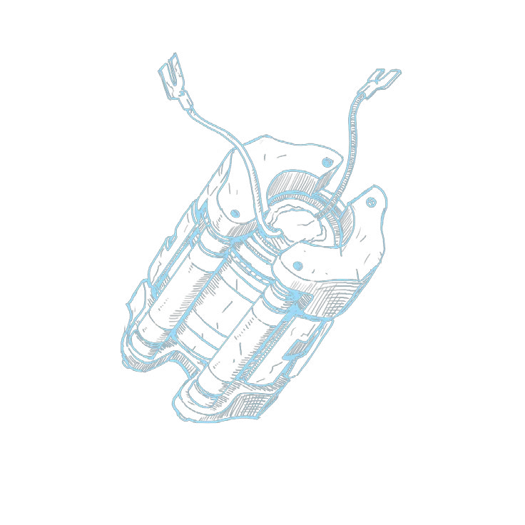
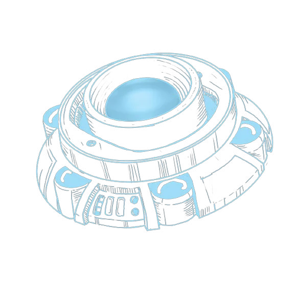
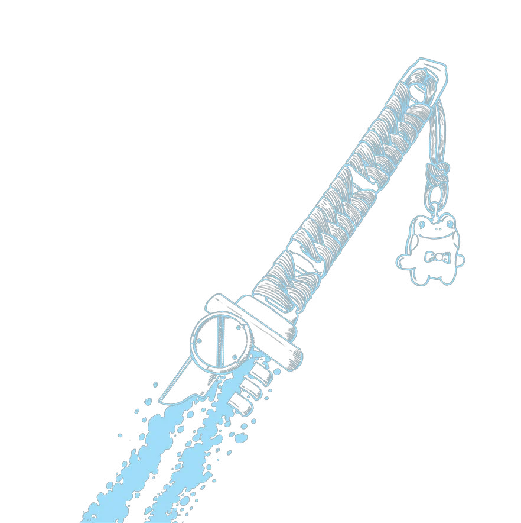
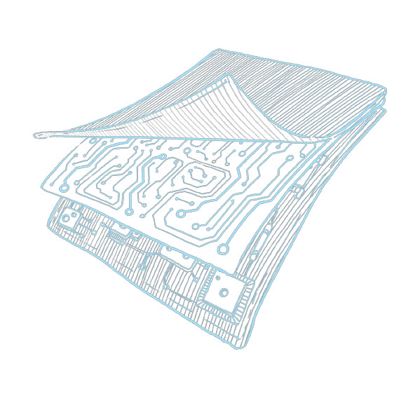

Würfle, um Dinge zu zerschmettern, zu stemmen und zu crashen – mit roher Kraft.
Würfle, um Dinge mit einem Realitätsstrahl durcheinanderzubringen.
Würfle, um Dinge aus der Ferne mit zermalmender Kraft zu treffen.
Würfle, um dich kurz durch Raum und Zeit zu teleportieren.

Würfle, um Objekte aus festem Licht zu erschaffen.

Würfle, um mit einer reibungsfreien Klinge fast alles zu durchschneiden.

Würfle, um Licht zu formen, zu verbiegen und zu verschlucken.
Würfle, um Bewegungsenergie aufzunehmen und wieder abzugeben.
… Skipmode Runners · Voidwear Backpack · Hyperoptic Visor · Robotic Companion in der nächsten Zeile
| 1 | Spule | 4 | Edelstein |
| 2 | Scheibe | 5 | Wahl |
| 3 | Linse | 6 | Wahl & nochmal würfeln |